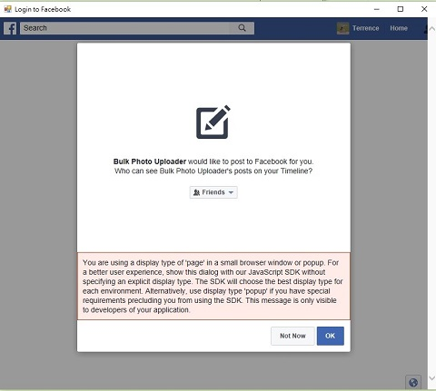

Logout from Facebook
Bulk Photo Uploader will save your Facebook
login information in cache. If you want to clear this information
and relogin again, you could click
after you login.
After you click
Bulk Photo Uploader will exit and you need to restart
the application.
